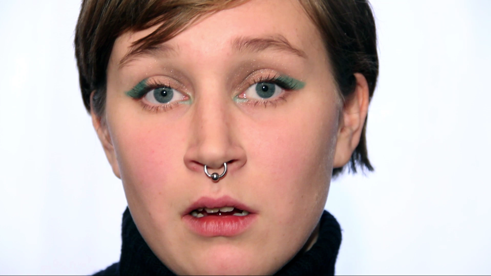
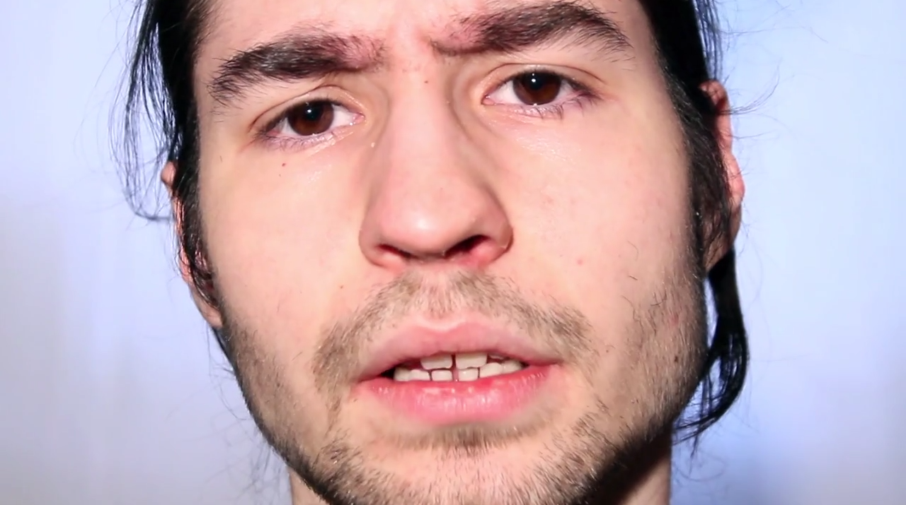
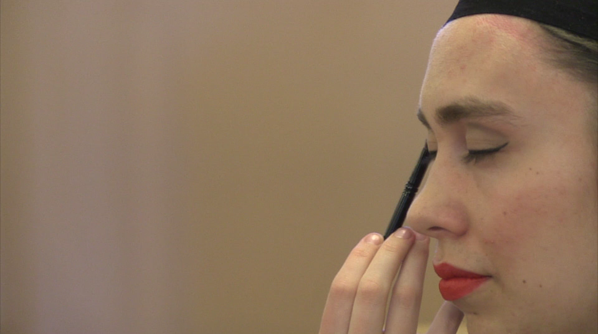
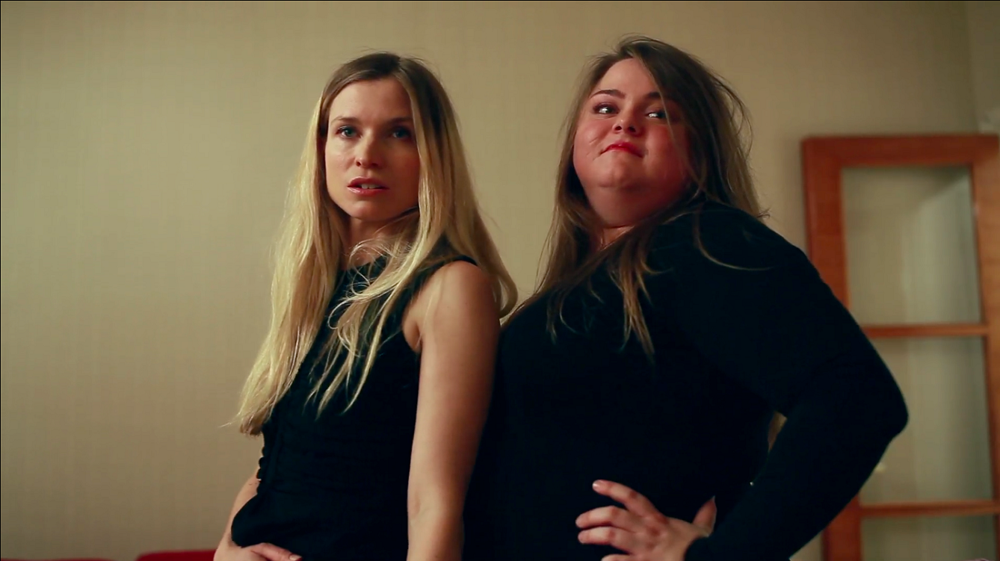

om oss
Sedan 2013 har Tjejfilm varit en plattform för filmskapare som inte vill kompromissa med en mansdominerad filmbransch. Tjejfilm är ett rum till för att stötta och möjliggöra idéer och projekt som inte uppmuntras av den branschen. Tjejfilm är ett nätverk där vi hjälper varandra att upptäcka och skapa nya former för filmskapande. Samarbetet mellan olika positioner i filmproduktion är viktigt och vi vill gärna se filmarbetare från olika delar i filmprocessen som medlemmar i Tjejfilm. Vill du bli medlem hör gärna av dig till till nån av oss som sitter i styrelsen och berätta vad du vill göra.
filmer

Porrskadat är en intervjufilm där åtta tjejer berättar om hur porr påverkat deras relationer, sexualitet och självbild. Det är personliga berättelser som problematiserar kring skapad sexualitet och vad ett allt mer pornofierat samhälle kan göra med ens varande.

Porrskadat 2.0 är en intervjufilm med liknande uppbyggnad, men med män istället för kvinnor som berättar om hur deras relation till porr ser ut och hur den påverkar dem.

Kön handlar inte om kön är en dokumentärfilm där tvåkönsnormen ifrågasätts bland annat genom att vi får höra fyra peroners upplevelser av att inte identifiera sig med ett linjärt kön.

Onesize är en kortfilm som handlar om dynamiken i en vänskap där vännerna befinner sig på två sidor av skönhetsidealet.
kontakt
Maila oss:
moa@tjejfilm.se
roxane@tjejfilm.se
lisa@tjejfilm.se
Ring oss:
Moa: 0737-77 66 77
Roxane: 0739-27 23 19
Lisa: 0720-47 83 81